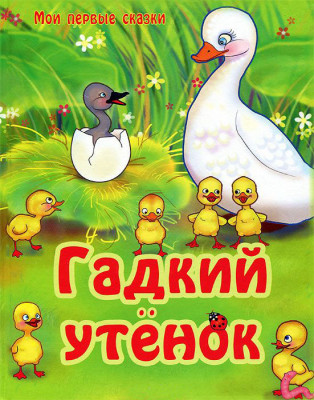

Гадкий утёнок
Г. Х. Андерсон
Хорошо было за городом! Стояло лето, рожь уже пожелтела, овсы зеленели, сено было сметано в стога; по зеленому лугу расхаживал длинноногий аист и болтал по-египетски — он выучился этому языку от матери. За полями и лугами шли большие леса с глубокими озерами в чаще. Да, хорошо было за городом! Прямо на солнышке лежала старая усадьба, окруженная глубокими канавами с водой; от самого строения вплоть до воды рос лопух, да такой большой, что маленькие ребятишки могли стоять под самыми крупными из его листьев во весь рост. В самой чаще лопуха было так же глухо и дико, как в густом лесу, и вот там-то сидела на яйцах утка. Сидела она уже давно, и ей порядком надоело это сидение — ее мало навещали: другим уткам больше нравилось плавать по канавкам, чем сидеть в лопухе да крякать с нею. Наконец яичные скорлупки затрещали.
— Пи! Пи! — послышалось из них, яичные желтки ожили и повысунули из скорлупок носики.
— Живо! Живо! — закрякала утка, и утята заторопились, кое-как выкарабкались и начали озираться кругом, разглядывая зеленые листья лопуха; мать не мешала им — зеленый свет полезен для глаз.
— Как мир велик! — сказали утята.
Еще бы! Теперь у них было куда больше места, чем тогда, когда они лежали в яйцах.
— А вы думаете, что тут и весь мир? — сказала мать. — Нет! Он идет далеко-далеко, туда, за сад, в поле священника, но там я отроду не бывала!.. Ну, все, что ли, вы тут? — И она встала. — Ах, нет, не все! Самое большое яйцо целехонько! Да скоро ли этому будет конец! Право, мне уж надоело.
И она уселась опять.
— Ну, как дела? — заглянула к ней старая утка.
— Да вот еще одно яйцо остается! — сказала молодая утка. — Сижу, сижу, а все толку нет! Но посмотри-ка на других! Просто прелесть! Ужасно похожи на отца! А он-то, негодный, и не навестил меня ни разу!
— Постой-ка, я взгляну на яйцо! — сказала старая утка. — Может статься, это индюшечье яйцо! Меня тоже надули раз! Ну и маялась же я, как вывела индюшат! Они страсть как боятся воды; уж я и крякала, и звала, и толкала их в воду — не идут, да и конец! Дай мне взглянуть на яйцо! Ну, так и есть! Индюшечье! Брось-ка его да ступай, учи других плавать!
— Посижу уж еще! — сказала молодая утка. — Сидела столько, что можно посидеть и еще немножко.
— Как угодно! — сказала старая утка и ушла. Наконец затрещала скорлупка и самого большого яйца.
— Пи! Пи! — и оттуда вывалился огромный некрасивый птенец. Утка оглядела его.
— Ужасно велик! — сказала она. — И совсем не похож на остальных! Неужели это индюшонок? Ну да в воде-то он у меня побывает, хоть бы мне пришлось столкнуть его туда силой!
На другой день погода стояла чудесная, зеленый лопух весь был залит солнцем. Утка со всею своею семьей отправилась к канаве. Бултых! — и утка очутилась в воде.
— За мной! Живо! — позвала она утят, и те один за другим тоже бултыхнулись в воду.
Сначала вода покрыла их с головками, но затем они вынырнули и поплыли так, что любо. Лапки у них так и работали; некрасивый серый утенок не отставал от других.
— Какой же это индюшонок? — сказала утка. — Ишь как славно гребет лапками, как прямо держится! Нет, это мой собственный сын! Да он вовсе и не дурен, как посмотришь на него хорошенько! Ну, живо, живо, за мной! Я сейчас введу вас в общество: мы отправимся на птичий двор. Но держитесь ко мне поближе, чтобы кто-нибудь не наступил на вас, да берегитесь кошек!
Скоро добрались и до птичьего двора. Батюшки! Что тут был за шум и гам! Две семьи дрались из-за одной угриной головки, и в конце концов она досталась кошке.
— Вот как идут дела на белом свете! — сказала утка и облизнула язычком клюв: ей тоже хотелось отведать угриной головки. — Ну, ну, шевелите лапками! — сказала она утятам. — Крякните и поклонитесь вон той старой утке! Она здесь знатнее всех! Она испанской породы и потому такая жирная. Видите, у нее на лапке красный лоскуток? Как красиво! Это знак высшего отличия, какого только может удостоиться утка. Люди дают этим понять, что не желают потерять ее; по этому лоскутку ее узнают и люди, и животные. Ну, живо! Да не держите лапки вместе! Благовоспитанный утенок должен держать лапки врозь и выворачивать их наружу, как папаша с мамашей! Вот так! Кланяйтесь теперь и крякайте!
Они так и сделали, но другие утки оглядывали их и громко говорили:
— Ну, вот еще целая орава! Точно нас мало было! А один-то какой безобразный! Его уж мы не потерпим!
И сейчас же одна утка подскочила и клюнула его в шею.
— Оставьте его! — сказала утка-мать. — Он вам ведь ничего не сделал!
— Положим, но он такой большой и странный! — отвечала забияка. — Ему и надо задать хорошенько!
— Славные у тебя детки! — сказала старая утка с красным лоскутком на лапке. — Все очень милы, кроме одного... Этот не удался! Хорошо бы его переделать!
— Никак нельзя, ваша милость! — ответила утка-мать. — Он некрасив, но у него доброе сердце, и плавает он не хуже, смею даже сказать, лучше других. Я думаю, что он вырастет, похорошеет или станет со временем поменьше. Он залежался в яйце, оттого и не совсем удался. — И она провела носиком по перышкам большого утенка. — Кроме того, он селезень, а ему красота не так нужна. Я думаю, что он возмужает и пробьет себе дорогу!
— Остальные утята очень-очень милы! — сказала старая утка. — Ну, будьте же как дома, а найдете угриную головку, можете принести ее мне.
Вот они и стали вести себя, как дома. Только бедного утенка, который вылупился позже всех и был такой безобразный, клевали, толкали и осыпали насмешками решительно все — и утки, и куры.
— Он больно велик! — говорили все, а индюк, который родился со шпорами на ногах и потому воображал себя императором, надулся и, словно корабль на всех парусах, подлетел к утенку, поглядел на него и пресердито залопотал; гребешок у него так весь и налился кровью. Бедный утенок просто не знал, что ему делать, как быть. И надо же ему было уродиться таким безобразным посмешищем для всего птичьего двора!
Так прошел первый день, затем пошло еще хуже. Все гнали бедняжку, даже братья и сестры сердито говорили ему: «Хоть бы кошка утащила тебя, несносного урода!» — а мать прибавляла: «Глаза бы мои тебя не видали!» Утки клевали его, куры щипали, а девушка, которая давала птицам корм, толкала ногою.
Не выдержал утенок, перебежал двор и — через изгородь! Маленькие птички испуганно вспорхнули из кустов.
«Они испугались меня — такой я безобразный!» — подумал утенок и пустился с закрытыми глазами дальше, пока не очутился в болоте, где жили дикие утки. Усталый и печальный он просидел тут всю ночь.
Утром утки вылетели из гнезд и увидали нового товарища.
— Ты кто такой? — спросили они, а утенок вертелся, раскланиваясь на все стороны, как умел.
— Ты пребезобразный! — сказали дикие утки. — Но нам до этого нет дела, только не вздумай породниться с нами!
Бедняжка! Где уж ему было и думать об этом! Лишь бы позволили ему посидеть тут в камышах да попить болотной водицы.
Два дня провел он в болоте, на третий явились два диких гусака. Они недавно вылупились из яиц и потому выступали с большим форсом.
— Слушай, дружище! — сказали они. — Ты такой урод, что, право, нравишься нам! Хочешь бродить с нами и быть вольной птицей? Недалеко отсюда, в другом болоте, живут премиленькие дикие гусыни-барышни. Они умеют говорить «рап, рап!» Ты такой урод, что — чего доброго — будешь иметь у них большой успех!
«Пиф! паф!» — раздалось вдруг над болотом, и оба гусака упали в камыши мертвыми: вода окрасилась кровью. «Пиф! паф!» — раздалось опять, и из камышей поднялась целая стая диких гусей. Пошла пальба. Охотники окружили болото со всех сторон; некоторые из них сидели в нависших над болотом ветвях деревьев. Голубой дым облаками окутывал деревья и стлался над водой. По болоту шлепали охотничьи собаки; камыш качался из стороны в сторону. Бедный утенок был ни жив ни мертв от страха и только хотел спрятать голову под крыло, как глядь — перед ним охотничья собака с высунутым языком и сверкающими злыми глазами. Она приблизила к утенку свою пасть, оскалила острые зубы и — шлеп, шлеп — побежала дальше.
— Слава Богу! — перевел дух утенок. — Слава Богу! Я так безобразен, что даже собаке не хочется укусить меня!
И он притаился в камышах; над головою его то и дело летали дробинки, раздавались выстрелы.
Пальба стихла только к вечеру, но утенок долго еще боялся пошевелиться. Прошло еще несколько часов, пока он осмелился встать, оглядеться и пуститься бежать дальше по полям и лугам. Дул такой сильный ветер, что утенок еле-еле мог двигаться.
К ночи он добежал до бедной избушки. Избушка так уже обветшала, что готова была упасть, да не знала, на какой бок, оттого и держалась. Ветер так и подхватывал утенка — приходилось упираться в землю хвостом!
Ветер, однако, все крепчал; что было делать утенку? К счастью, он заметил, что дверь избушки соскочила с одной петли и висит совсем криво: можно было свободно проскользнуть через эту щель в избушку. Так он и сделал.
В избушке жила старушка с котом и курицей. Кота она звала сыночком; он умел выгибать спинку, мурлыкать и даже испускать искры, если его гладили против шерсти. У курицы были маленькие, коротенькие ножки, ее и прозвали Коротконожкой; она прилежно несла яйца, и старушка любила ее, как дочку.
Утром пришельца заметили: кот начал мурлыкать, а курица клохтать.
— Что там? — спросила старушка, осмотрелась кругом и заметила утенка, но по слепоте своей приняла его за жирную утку, которая отбилась от дому.
— Вот так находка! — сказала старушка. — Теперь у меня будут утиные яйца, если только это не селезень. Ну да увидим, испытаем!
И утенка приняли на испытание, но прошло недели три, а яиц все не было. Господином в доме был кот, а госпожою курица, и оба всегда говорили: «Мы и свет!» Они считали самих себя половиной всего света, притом — лучшею его половиной. Утенку же казалось, что можно на этот счет быть и другого мнения. Курица, однако, этого не потерпела.
— Умеешь ты нести яйца? — спросила она утенка.
— Нет!
— Так и держи язык на привязи!
А кот спросил:
— Умеешь ты выгибать спинку, мурлыкать и испускать искры?
— Нет!
— Так и не суйся со своим мнением, когда говорят умные люди!
И утенок сидел в углу, нахохлившись. Вдруг вспомнились ему свежий воздух и солнышко, и ему страшно захотелось поплавать. Он не выдержал и сказал об этом курице.
— Да что с тобой?! — спросила она. — Бездельничаешь, вот тебе блажь в голову и лезет! Неси-ка яйца или мурлычь — дурь-то и пройдет!
— Ах, плавать по воде так приятно! — сказал утенок. — А что за наслаждение нырять в самую глубь с головой!
— Хорошо наслаждение! — сказала курица. — Ты совсем рехнулся! Спроси у кота — он умнее всех, кого я знаю, — нравится ли ему плавать или нырять! О себе самой я уж не говорю! Спроси, наконец, у нашей старушки госпожи: умнее ее нет никого в свете! По-твоему, и ей хочется плавать или нырять с головой?
— Вы меня не понимаете! — сказал утенок.
— Если уж мы не понимаем, так кто тебя и поймет! Что ж, ты хочешь быть умнее кота и госпожи, не говоря уже обо мне? Не дури, а благодари-ка лучше Создателя за все, что для тебя сделали! Тебя приютили, пригрели, тебя окружает такое общество, в котором ты можешь чему-нибудь научиться, но ты — пустая голова, и говорить-то с тобой не стоит! Уж поверь мне! Я желаю тебе добра, потому и браню тебя: по этому всегда узнаются истинные друзья! Старайся же нести яйца или выучись мурлыкать да пускать искры!
— Я думаю, мне лучше уйти отсюда куда глаза глядят! — сказал утенок.
— И с Богом! — отвечала курица.
И утенок ушел, плавал и нырял с головой, но все животные по-прежнему презирали его за безобразие.
Настала осень; листья на деревьях пожелтели и побурели; ветер подхватывал и кружил их по воздуху; наверху, в небе, стало так холодно, что тяжелые облака сеяли градом и снегом, а на изгороди сидел ворон и каркал от холода во все горло. Брр! Замерзнешь при одной мысли о таком холоде! Плохо приходилось бедному утенку.
Раз вечером, когда солнышко еще так славно сияло на небе, из-за кустов поднялась целая стая чудных больших птиц; утенок сроду не видал таких красавцев: все они были белы как снег, с длинными, гибкими шеями! То были лебеди. Они испустили какой-то странный крик, взмахнули великолепными большими крыльями и полетели с холодных лугов в теплые края, за синее море. Они поднялись высоко-высоко, а бедного утенка охватило какое-то странное волнение. Он завертелся в воде, как волчок, вытянул шею и тоже испустил такой громкий и странный крик, что и сам испугался. Чудные птицы не шли у него из головы, и, когда они окончательно скрылись из виду, он нырнул на самое дно, вынырнул опять и был словно вне себя. Утенок не знал, как зовут этих птиц, куда они летели, но полюбил их, как не любил до сих пор никого. Он не завидовал их красоте: ему и в голову не могло прийти пожелать походить на них; он рад бы был и тому, чтоб хоть утки-то его от себя не отталкивали. Бедный безобразный утенок!
А зима стояла холодная-прехолодная. Утенку приходилось плавать по воде без отдыха, чтобы не дать ей замерзнуть совсем, но с каждою ночью свободное ото льда пространство становилось все меньше и меньше. Морозило так, что ледяная кора трещала. Утенок без устали работал лапками, но под конец обессилел, приостановился и весь обмерз.
Рано утром мимо проходил крестьянин, увидал примерзшего утенка, разбил лед своим деревянным башмаком и принес птицу домой к жене. Утенка отогрели.
Но вот дети вздумали поиграть с ним, а он вообразил, что они хотят обидеть его, и шарахнулся со страха прямо в подойник с молоком — молоко все расплескалось. Женщина вскрикнула и всплеснула руками; утенок между тем влетел в кадку с маслом, а оттуда — в бочонок с мукой. Батюшки, на что он был похож! Женщина вопила и гонялась за ним с угольными щипцами, дети бегали, сшибая друг друга с ног, хохотали и визжали. Хорошо, что дверь стояла отворенной: утенок выбежал, кинулся в кусты прямо на свежевыпавший снег и долго-долго лежал там почти без чувств.
Было бы чересчур печально описывать все злоключения утенка во время суровой зимы. Когда же солнышко опять пригрело землю своими теплыми лучами, он лежал в болоте, в камышах. Запели жаворонки, пришла весна-красна.
Утенок взмахнул крыльями и полетел; теперь крылья его шумели и были куда крепче прежнего. Не успел он опомниться, как уже очутился в большом саду. Яблони стояли все в цвету, душистая сирень склоняла свои длинные зеленые ветви над извилистым каналом.
Ах, как тут было хорошо, как пахло весною! Вдруг из чащи тростника выплыли три чудных белых лебедя. Они плыли так легко и плавно, точно скользили по воде. Утенок узнал красивых птиц, и его охватила какая-то странная грусть.
«Полечу-ка я к этим царственным птицам; они, наверное, убьют меня за мою дерзость, за то, что я, такой безобразный, осмелился приблизиться к ним, но пусть! Лучше быть убитым ими, чем сносить щипки уток и кур, толчки птичницы да терпеть холод и голод зимою!»
И он слетел в воду и поплыл навстречу красавцам лебедям, которые, завидя его, тоже устремились к нему.
— Убейте меня! — сказал бедняжка и опустил голову, ожидая смерти, но что же увидал он в чистой, как зеркало, воде? Свое собственное отражение, но он был уже не безобразною темно-серою птицей, а — лебедем!
Не беда появиться на свет в утином гнезде, если вылупился из лебединого яйца!
Теперь он был рад, что перенес столько горя и бедствий: он лучше мог теперь оценить свое счастье и все окружавшее его великолепие. Большие лебеди плавали вокруг него и ласкали его, гладя клювами по перышкам.
В сад прибежали маленькие дети; они стали бросать лебедям хлебные крошки и зерна, а самый маленький из них закричал:
— Новый, новый!
И все остальные подхватили:
— Да, новый, новый! — хлопали в ладоши и приплясывали от радости; потом побежали за отцом с матерью, и опять бросали в воду крошки хлеба и пирожного.
Все говорили, что новый красивее всех. Такой молоденький, прелестный!
И старые лебеди склонили перед ним головы.
А он совсем смутился и спрятал голову под крыло, сам не зная зачем. Он был чересчур счастлив, но нисколько не гордился: доброе сердце не знает гордости, помня то время, когда все его презирали и гнали. А теперь все говорят, что он прекраснейший между прекрасными птицами! Сирень склоняла к нему в воду свои душистые ветви; солнышко светило так славно... И вот крылья его зашумели, стройная шея выпрямилась, а из груди вырвался ликующий крик:
— Нет, о таком счастье я и не мечтал, когда был еще безобразным утенком!